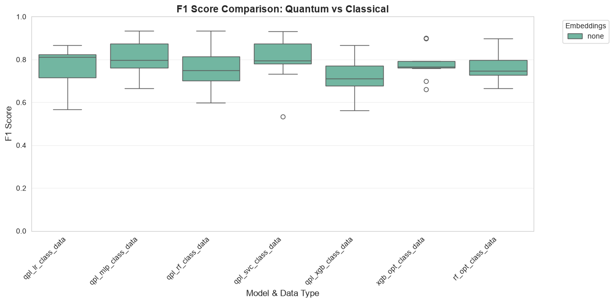
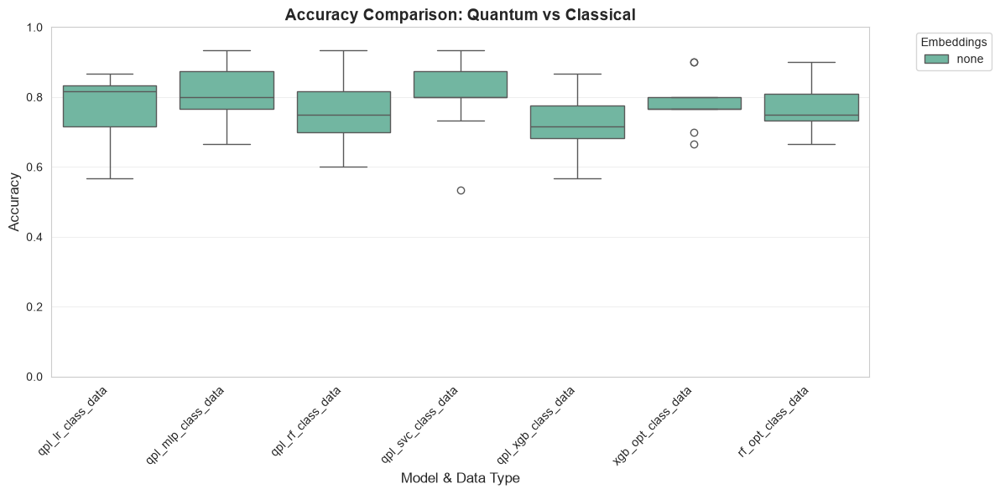
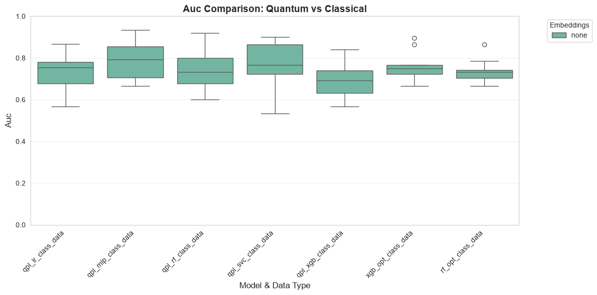
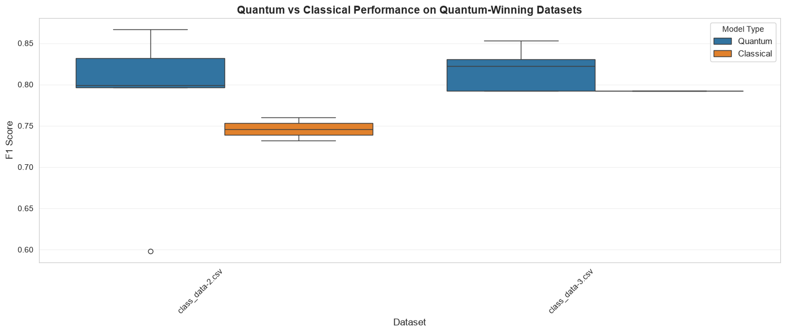

Quantum Projection Learning (QPL) Tutorial#
Overview#
Quantum Projection Learning (QPL) is an advanced quantum machine learning technique that extends Projected Quantum Kernels (PQK) by evaluating quantum-projected data with multiple classical machine learning algorithms. Instead of using only Support Vector Machines, QPL systematically compares performance across:
Support Vector Classifier (SVC)
Random Forest (RF)
XGBoost (XGB)
Multi-Layer Perceptron (MLP)
Logistic Regression (LR)
This comprehensive approach helps identify which classical learner best exploits quantum feature representations for a given dataset.
What You’ll Learn#
Generate synthetic classification datasets with controlled complexity
Configure and run QPL experiments using QProfiler
Compare quantum-enhanced vs. classical baseline performance
Analyze results across multiple models and embeddings
Visualize performance metrics and identify where quantum features help
Key Concepts#
Quantum Feature Maps: Transform classical data into quantum states
Quantum Projections: Extract features from quantum circuits via expectation values
Ensemble Learning: Combine multiple classical learners on quantum features
Data Complexity Analysis: Understand which datasets benefit from quantum processing
1. Setup and Imports#
First, configure the environment and import necessary libraries.
[1]:
%load_ext autoreload
%autoreload 2
import sys
import os
import re
import yaml
import pandas as pd
import numpy as np
import matplotlib.pyplot as plt
import seaborn as sns
# Set up paths
dir_home = re.sub('QBioCode.*', 'QBioCode', os.getcwd())
sys.path.append(dir_home)
sys.path.append(os.path.join(dir_home, 'apps'))
# Import QBioCode
import qbiocode as qbc
from qbiocode.apps.qprofiler import qprofiler as profiler
# Set plotting style
sns.set_style('whitegrid')
plt.rcParams['figure.dpi'] = 100
print("✓ Environment configured successfully")
print(f"✓ Working directory: {os.getcwd()}")
<env>/lib/python3.12/site-packages/tqdm/auto.py:21: TqdmWarning: IProgress not found. Please update jupyter and ipywidgets. See https://ipywidgets.readthedocs.io/en/stable/user_install.html
from .autonotebook import tqdm as notebook_tqdm
✓ Environment configured successfully
✓ Working directory: <repo>/tutorial/Quantum_Projection_Learning
2. Understanding Quantum Projection Learning#
What is QPL?#
Quantum Projection Learning works in three stages:
Quantum Encoding: Classical data is encoded into quantum states using parameterized quantum circuits (feature maps)
Quantum Projection: Expectation values of Pauli operators are measured, creating quantum-derived features
Classical Learning: Multiple classical ML models are trained on these quantum features
Why Multiple Classifiers?#
Different classifiers have different inductive biases:
SVC: Effective for high-dimensional, non-linear boundaries
Random Forest: Robust to noise, captures feature interactions
XGBoost: Excellent for structured data, handles imbalanced classes
MLP: Can learn complex non-linear patterns
Logistic Regression: Simple, interpretable baseline
By testing all of them, we identify which best exploits quantum features for each dataset.
3. Generate Synthetic Test Data#
We’ll create artificial classification datasets with controlled properties to test QPL performance.
[2]:
# Dataset configuration
type_of_data = 'classes'
save_path = os.path.join('data', 'qpl_tutorial_data')
# Dataset parameters. generate_data takes the *product* of these lists, so each value
# added here multiplies the run time; the settings below give 4 datasets.
#
# Feature count is the one to be careful with. With embeddings: ['none'] the feature
# map spends one qubit per feature, and simulating it costs exponentially more per
# qubit -- measured on a laptop, for 100 samples:
#
# 6 qubits 6.3s 12 qubits 25.4s
# 8 qubits 5.2s 15 qubits 138.3s
#
# This cell used to ask for 10-15 features across 32 datasets, which put the quantum
# cell alone near three hours. Staying at 6-8 shows the same behaviour in minutes.
N_SAMPLES = [100] # Number of samples per dataset
N_FEATURES = [6, 8] # Number of features -- and so of qubits
N_INFORMATIVE = [4] # Number of informative features
N_REDUNDANT = [2] # Number of redundant features
N_CLASSES = [2] # Binary classification
N_CLUSTERS_PER_CLASS = [2] # Clusters per class
WEIGHTS = [[0.3, 0.7], [0.5, 0.5]] # Class imbalance scenarios
print("Generating synthetic datasets...")
print(f" - Data type: {type_of_data}")
print(f" - Sample sizes: {N_SAMPLES}")
print(f" - Feature dimensions: {N_FEATURES}")
print(f" - Class weights: {WEIGHTS}")
# Generate datasets
qbc.generate_data(
type_of_data=type_of_data,
save_path=save_path,
n_samples=N_SAMPLES,
n_features=N_FEATURES,
n_informative=N_INFORMATIVE,
n_redundant=N_REDUNDANT,
n_classes=N_CLASSES,
n_clusters_per_class=N_CLUSTERS_PER_CLASS,
weights=WEIGHTS,
)
print(f"\n✓ Datasets generated and saved to: {save_path}")
# List generated files
if os.path.exists(save_path):
files = sorted(f for f in os.listdir(save_path) if f.endswith('.csv'))
print(f"✓ Generated {len(files)} dataset files")
for f in files:
print(f" - {f}")
Generating synthetic datasets...
- Data type: classes
- Sample sizes: [100]
- Feature dimensions: [6, 8]
- Class weights: [[0.3, 0.7], [0.5, 0.5]]
Generating classes dataset...
Dataset generation complete.
✓ Datasets generated and saved to: data/qpl_tutorial_data
✓ Generated 4 dataset files
- class_data-1.csv
- class_data-2.csv
- class_data-3.csv
- class_data-4.csv
4. Configure QPL Experiment#
QProfiler uses YAML configuration files to specify experimental parameters. Let’s examine the QPL configuration.
[3]:
# Load and display QPL configuration
qpl_config_path = 'configs/qpl.yaml'
with open(qpl_config_path, 'r') as f:
qpl_config = yaml.safe_load(f)
print("QPL Configuration:")
print("=" * 60)
print(yaml.dump(qpl_config, default_flow_style=False, sort_keys=False))
print("=" * 60)
print("\nKey Configuration Parameters:")
print(f" - Model: {qpl_config.get('model', 'N/A')}")
print(f" - Backend: {qpl_config.get('backend', 'N/A')}")
print(f" - Data directory: {qpl_config.get('folder_path', 'N/A')}")
print(f" - Embeddings: {qpl_config.get('embeddings', 'N/A')}")
if 'pqk' in qpl_config:
print("\n PQK-specific parameters:")
for key, value in qpl_config['pqk'].items():
print(f" - {key}: {value}")
QPL Configuration:
============================================================
config_file_name: basic_config
folder_path: data/qpl_tutorial_data
file_dataset: ALL
backend: simulator
qiskit_json_path: ~/.qiskit/qiskit-ibm.json
name: cleveland_clinic
n_jobs: 9
embeddings:
- none
n_components: 3
model:
- qpl
average: weighted
multi_class: raise
seed: 42
q_seed: 42
shots: 1024
resil_level: 1
test_size: 0.3
stratify:
- y
scaling:
- 'True'
grid_search: false
cross_validation: 5
NN_depth: 1
iter: 3
svc_args:
C: 0.01
gamma: 0.1
kernel: linear
gridsearch_svc_args:
C:
- 0.1
- 1
- 10
- 100
gamma:
- 0.001
- 0.01
- 0.1
- 1
kernel:
- linear
- rbf
- poly
- sigmoid
dt_args:
criterion: gini
max_depth: null
min_samples_split: 2
min_samples_leaf: 1
max_features: null
gridsearch_dt_args:
criterion:
- gini
- entropy
- log_loss
max_depth:
- null
- 5
- 10
- 15
- 20
min_samples_split:
- 2
- 5
- 10
- 15
min_samples_leaf:
- 1
- 2
- 4
- 6
max_features:
- null
- sqrt
- log2
nb_args:
var_smoothing: 1.0e-09
gridsearch_nb_args:
var_smoothing:
- 1.0e-09
- 1.0e-08
- 1.0e-07
- 1.0e-06
- 1.0e-05
- 0.0001
- 0.001
- 0.01
lr_args:
penalty: l2
C: 1.0
solver: saga
max_iter: 10000
gridsearch_lr_args:
penalty:
- l1
- l2
C:
- 0.001
- 0.01
- 0.1
- 1.0
- 10.0
- 100.0
- 1000.0
solver:
- liblinear
- saga
max_iter:
- 5000
- 10000
rf_args:
n_estimators: 100
max_features: sqrt
max_depth: null
min_samples_split: 2
min_samples_leaf: 1
bootstrap: true
gridsearch_rf_args:
n_estimators:
- 50
- 100
max_features:
- sqrt
- log2
max_depth:
- 5
- 10
- null
min_samples_split:
- 2
- 5
xgb_args:
n_estimators: 100
max_depth: null
learning_rate: 0.5
subsample: 0.5
colsample_bytree: 1.0
min_child_weight: 1
gridsearch_xgb_args:
n_estimators:
- 50
- 100
max_depth:
- 3
- 5
learning_rate:
- 0.1
- 0.3
subsample:
- 0.8
- 1.0
mlp_args:
hidden_layer_sizes: 100
activation: relu
max_iter: 10000
solver: adam
alpha: 0.0001
learning_rate: constant
gridsearch_mlp_args:
hidden_layer_sizes:
- - 20
- - 50
- - 100
activation:
- tanh
- relu
max_iter:
- 5000
- 10000
solver:
- sgd
- adam
alpha:
- 0.0001
- 0.05
learning_rate:
- constant
- adaptive
qnn_args:
primitive: estimator
local_optimizer: COBYLA
encoding: ZZ
entanglement: linear
reps: 2
maxiter: 100
ansatz_type: amp
qsvc_args:
C: 0.01
pegasos: false
encoding: ZZ
entanglement: linear
reps: 2
primitive: sampler
vqc_args:
primitive: sampler
local_optimizer: COBYLA
maxiter: 100
encoding: ZZ
entanglement: linear
reps: 2
ansatz_type: amp
qpl_args:
encoding: ZZ
entanglement: pairwise
primitive: estimator
reps: 4
pqk_args:
encoding: ZZ
entanglement: pairwise
primitive: estimator
reps: 4
hydra:
run:
dir: results/${config_file_name}/dataset=${file_dataset}/${backend}_${now:%Y-%m-%d_%H-%M-%S}
============================================================
Key Configuration Parameters:
- Model: ['qpl']
- Backend: simulator
- Data directory: data/qpl_tutorial_data
- Embeddings: ['none']
5. Run QPL Experiment#
Execute the QPL experiment using QProfiler. This will:
Load the generated datasets
Apply quantum feature maps
Extract quantum projections
Train all 5 classical models on quantum features
Evaluate performance and save results
[4]:
print("=" * 80)
print("RUNNING QUANTUM PROJECTION LEARNING EXPERIMENT")
print("=" * 80)
# QProfiler *appends* to ModelResults.csv, which is what lets the quantum run here and
# the classical baselines in the next cell accumulate into one comparable table. The
# same append means a second pass through this notebook would silently double every
# row, so clear the previous pass's output first and start from a known state.
for stale in ('ModelResults.csv', 'RawDataEvaluation.csv'):
if os.path.exists(stale):
os.remove(stale)
print(f"Removed {stale} left by an earlier run")
print("\nQPL projects each sample through a quantum feature map, then fits five")
print("classical learners on the resulting expectation values, so this single run")
print("produces qpl_svc, qpl_rf, qpl_xgb, qpl_mlp and qpl_lr rows.")
print("Expect a few minutes: cost scales with datasets x splits x samples, and")
print("exponentially with the qubit count (= feature count) chosen above.\n")
# Run QPL experiment
profiler.main(qpl_config)
print("\n" + "=" * 80)
print("✓ QPL EXPERIMENT COMPLETED")
print("=" * 80)
================================================================================
RUNNING QUANTUM PROJECTION LEARNING EXPERIMENT
================================================================================
QPL projects each sample through a quantum feature map, then fits five
classical learners on the resulting expectation values, so this single run
produces qpl_svc, qpl_rf, qpl_xgb, qpl_mlp and qpl_lr rows.
Expect a few minutes: cost scales with datasets x splits x samples, and
exponentially with the qubit count (= feature count) chosen above.
Processing file: class_data-1.csv
at datapoint 0
at datapoint 0
qpl_rf
qpl_mlp
qpl_svc
qpl_lr
qpl_xgb
at datapoint 0
at datapoint 0
qpl_rf
qpl_mlp
qpl_svc
qpl_lr
qpl_xgb
at datapoint 0
at datapoint 0
qpl_rf
qpl_mlp
qpl_svc
qpl_lr
qpl_xgb
Processing file: class_data-2.csv
at datapoint 0
at datapoint 0
qpl_rf
qpl_mlp
qpl_svc
qpl_lr
qpl_xgb
at datapoint 0
at datapoint 0
qpl_rf
qpl_mlp
qpl_svc
qpl_lr
qpl_xgb
at datapoint 0
at datapoint 0
qpl_rf
qpl_mlp
qpl_svc
qpl_lr
qpl_xgb
Processing file: class_data-3.csv
at datapoint 0
at datapoint 0
qpl_rf
qpl_mlp
qpl_svc
qpl_lr
qpl_xgb
at datapoint 0
at datapoint 0
qpl_rf
qpl_mlp
qpl_svc
qpl_lr
qpl_xgb
at datapoint 0
at datapoint 0
qpl_rf
qpl_mlp
qpl_svc
qpl_lr
qpl_xgb
Processing file: class_data-4.csv
at datapoint 0
at datapoint 0
qpl_rf
qpl_mlp
qpl_svc
qpl_lr
qpl_xgb
at datapoint 0
at datapoint 0
qpl_rf
qpl_mlp
qpl_svc
qpl_lr
qpl_xgb
at datapoint 0
at datapoint 0
qpl_rf
qpl_mlp
qpl_svc
qpl_lr
qpl_xgb
================================================================================
✓ QPL EXPERIMENT COMPLETED
================================================================================
6. Run Classical Baselines (XGBoost and Random Forest)#
A quantum result is only interesting next to a classical one that was given the same chance, so we run two tuned baselines on the original (non-quantum) features. Both read the datasets generated above and append to the same results table, so the next section can compare all of them side by side.
[5]:
print("=" * 80)
print("RUNNING CLASSICAL BASELINES (XGBoost, Random Forest)")
print("=" * 80)
# Two baselines rather than one. A quantum result only means something against a
# classical model that was itself tuned, and rf.yaml already existed in configs/ --
# fully configured, and loaded by nothing.
for config_name in ('configs/xgb.yaml', 'configs/rf.yaml'):
baseline_config = yaml.safe_load(open(config_name, 'r'))
print(f"\n--- {config_name} ---")
print(f" - Model: {baseline_config.get('model', 'N/A')}")
print(f" - Data directory: {baseline_config.get('folder_path', 'N/A')}")
print(f" - Embeddings: {baseline_config.get('embeddings', 'N/A')}")
print(f" - Grid search: {baseline_config.get('grid_search', False)}\n")
profiler.main(baseline_config)
print("\n" + "=" * 80)
print("✓ CLASSICAL BASELINES COMPLETED")
print("=" * 80)
================================================================================
RUNNING CLASSICAL BASELINES (XGBoost, Random Forest)
================================================================================
--- configs/xgb.yaml ---
- Model: ['xgb']
- Data directory: data/qpl_tutorial_data
- Embeddings: ['none']
- Grid search: True
Processing file: class_data-1.csv
Processing file: class_data-2.csv
Processing file: class_data-3.csv
Processing file: class_data-4.csv
--- configs/rf.yaml ---
- Model: ['rf']
- Data directory: data/qpl_tutorial_data
- Embeddings: ['none']
- Grid search: True
Processing file: class_data-1.csv
Processing file: class_data-2.csv
Processing file: class_data-3.csv
Processing file: class_data-4.csv
================================================================================
✓ CLASSICAL BASELINES COMPLETED
================================================================================
7. Load and Compile Results#
Collect all results from the experiments and compile them into comprehensive DataFrames.
[6]:
print("Loading experimental results...\n")
# Find all result files
data_eval_files = [
os.path.join(dp, f)
for dp, dn, filenames in os.walk(os.getcwd())
for f in filenames
if f == 'RawDataEvaluation.csv'
]
model_result_files = [
os.path.join(dp, f)
for dp, dn, filenames in os.walk(os.getcwd())
for f in filenames
if f == 'ModelResults.csv'
]
print(f"Found {len(data_eval_files)} data evaluation files")
print(f"Found {len(model_result_files)} model result files\n")
# Load and compile data complexity evaluations
if data_eval_files:
rawevals_df = pd.concat([pd.read_csv(f) for f in data_eval_files], ignore_index=True)
rawevals_df.to_csv('compiled_raw_data_evaluations.csv', index=False)
print(f"✓ Data evaluations compiled: {rawevals_df.shape}")
print(f" Saved to: compiled_raw_data_evaluations.csv")
else:
print("⚠ No data evaluation files found")
rawevals_df = pd.DataFrame()
# Load and compile model results
if model_result_files:
results_df = pd.concat([pd.read_csv(f) for f in model_result_files], ignore_index=True)
# Add useful columns for analysis
results_df['datatype'] = results_df['Dataset'].str.replace('-.*', '', regex=True)
results_df['model_embed_datatype'] = (
results_df['model'] + '_' +
results_df['embeddings'] + '_' +
results_df['datatype']
)
results_df['model_datatype'] = (
results_df['model'] + '_' + results_df['datatype']
)
results_df.to_csv('compiled_results.csv', index=False)
print(f"\n✓ Model results compiled: {results_df.shape}")
print(f" Saved to: compiled_results.csv")
# Display summary statistics
print("\nResults Summary:")
print(f" - Unique datasets: {results_df['Dataset'].nunique()}")
print(f" - Models tested: {results_df['model'].unique().tolist()}")
print(f" - Embeddings used: {results_df['embeddings'].unique().tolist()}")
print(f" - Metrics available: {[col for col in results_df.columns if 'score' in col or 'accuracy' in col or 'auc' in col]}")
else:
print("⚠ No model result files found")
results_df = pd.DataFrame()
print("\n" + "=" * 80)
# Shared by the plotting cells below. These used to be defined inside the plotting
# cell's `else:` branch, so the analysis cell after it raised NameError on any run
# where there were no results to plot -- exactly the run where you want the message,
# not a traceback.
output_dir = 'performance_summary_and_spearman_correlation_plots'
tag = 'qpl_tutorial'
os.makedirs(output_dir, exist_ok=True)
Loading experimental results...
Found 1 data evaluation files
Found 1 model result files
✓ Data evaluations compiled: (4, 24)
Saved to: compiled_raw_data_evaluations.csv
✓ Model results compiled: (84, 35)
Saved to: compiled_results.csv
Results Summary:
- Unique datasets: 4
- Models tested: ['qpl_lr', 'qpl_mlp', 'qpl_rf', 'qpl_svc', 'qpl_xgb', 'xgb_opt', 'rf_opt']
- Embeddings used: ['none']
- Metrics available: ['accuracy', 'f1_score', 'auc']
================================================================================
8. Performance Visualization#
Create comprehensive visualizations comparing quantum and classical performance.
[7]:
if results_df.empty:
print("⚠ No results to visualize. Please run the experiments first.")
else:
print("Generating performance visualizations...\n")
# Plot performance metrics
metrics = ['f1_score', 'accuracy', 'auc']
for metric in metrics:
if metric not in results_df.columns:
print(f"⚠ Metric '{metric}' not found in results")
continue
plt.figure(figsize=(12, 6))
# Create boxplot
sns.boxplot(
data=results_df,
x='model_datatype',
y=metric,
hue='embeddings',
palette='Set2'
)
plt.ylim(0, 1)
plt.xticks(rotation=45, ha='right')
plt.xlabel('Model & Data Type', fontsize=12)
plt.ylabel(metric.replace('_', ' ').title(), fontsize=12)
plt.title(f'{metric.replace("_", " ").title()} Comparison: Quantum vs Classical',
fontsize=14, fontweight='bold')
plt.legend(title='Embeddings', bbox_to_anchor=(1.05, 1), loc='upper left')
plt.grid(axis='y', alpha=0.3)
plt.tight_layout()
# Save figure
filename = os.path.join(output_dir, f'{tag}_{metric}_boxplot.png')
plt.savefig(filename, dpi=300, bbox_inches='tight')
print(f"✓ Saved: {filename}")
plt.show()
plt.close()
print(f"\n✓ All visualizations saved to: {output_dir}/")
Generating performance visualizations...
✓ Saved: performance_summary_and_spearman_correlation_plots/qpl_tutorial_f1_score_boxplot.png

✓ Saved: performance_summary_and_spearman_correlation_plots/qpl_tutorial_accuracy_boxplot.png

✓ Saved: performance_summary_and_spearman_correlation_plots/qpl_tutorial_auc_boxplot.png

✓ All visualizations saved to: performance_summary_and_spearman_correlation_plots/
9. Quantum vs. Classical Comparison#
Identify datasets where quantum methods outperform classical baselines.
[8]:
if results_df.empty:
print("⚠ No results to analyze")
else:
print("Comparing quantum and classical models...\n")
print("=" * 80)
# Read the quantum model names out of the results rather than hard-coding them.
# This list used to be ['pqk_lr', 'pqk_svc', 'pqk_rf', 'pqk_mlp', 'pqk_xgb'] -- the
# five QPL learner names wearing the PQK prefix, which is a set the pipeline can
# never produce under either model. Nothing matched, so `qml_winners` was always
# empty and the win rate printed 0.0% however well the quantum models did.
quantum_prefixes = ('qpl', 'pqk', 'qsvc', 'qnn', 'vqc')
qml_models = sorted(
m for m in results_df['model'].unique() if str(m).startswith(quantum_prefixes)
)
print(f"Quantum models in results: {qml_models}")
print(f"Classical models in results: "
f"{sorted(set(results_df['model'].unique()) - set(qml_models))}\n")
# Calculate median F1 score across splits for each dataset/model combination
df_median = results_df.groupby(['Dataset', 'embeddings', 'model'])['f1_score'].median().reset_index()
# Find best model for each dataset
best_per_dataset = df_median.loc[df_median.groupby('Dataset')['f1_score'].idxmax()]
# Identify datasets where quantum models won
qml_winners = best_per_dataset[best_per_dataset['model'].isin(qml_models)]
print(f"Total datasets analyzed: {df_median['Dataset'].nunique()}")
print(f"Datasets where QML won: {len(qml_winners)}")
print(f"Quantum win rate: {len(qml_winners) / df_median['Dataset'].nunique() * 100:.1f}%\n")
if len(qml_winners) > 0:
print("Datasets where a quantum model ranked first:")
print("-" * 80)
for idx, row in qml_winners.iterrows():
print(f" {row['Dataset']:40s} | {row['model']:12s} | F1: {row['f1_score']:.4f}")
# Create comparison plot
qml_winner_data = df_median[df_median['Dataset'].isin(qml_winners['Dataset'])].copy()
qml_winner_data['model_type'] = qml_winner_data['model'].apply(
lambda x: 'Quantum' if x in qml_models else 'Classical'
)
plt.figure(figsize=(14, 6))
ax = sns.boxplot(
data=qml_winner_data,
x='Dataset',
y='f1_score',
hue='model_type',
palette={'Quantum': '#1f77b4', 'Classical': '#ff7f0e'}
)
plt.xticks(rotation=45, ha='right')
plt.xlabel('Dataset', fontsize=12)
plt.ylabel('F1 Score', fontsize=12)
plt.title('Quantum vs Classical Performance on Quantum-Winning Datasets',
fontsize=14, fontweight='bold')
plt.legend(title='Model Type', fontsize=11)
plt.grid(axis='y', alpha=0.3)
plt.tight_layout()
filename = os.path.join(output_dir, f'{tag}_quantum_vs_classical.png')
plt.savefig(filename, dpi=300, bbox_inches='tight')
print(f"\n✓ Quantum vs. classical plot saved: {filename}")
plt.show()
plt.close()
else:
print("⚠ No datasets found where quantum models outperformed classical baselines.")
print(" This could indicate:")
print(" - Datasets are too simple to separate quantum from classical")
print(" - Classical models are well-suited for these problems")
print(" - More complex quantum feature maps may be needed")
print("\n" + "=" * 80)
Comparing quantum and classical models...
================================================================================
Quantum models in results: ['qpl_lr', 'qpl_mlp', 'qpl_rf', 'qpl_svc', 'qpl_xgb']
Classical models in results: ['rf_opt', 'xgb_opt']
Total datasets analyzed: 4
Datasets where QML won: 2
Quantum win rate: 50.0%
Datasets where a quantum model ranked first:
--------------------------------------------------------------------------------
class_data-2.csv | qpl_svc | F1: 0.8667
class_data-3.csv | qpl_rf | F1: 0.8534
✓ Quantum vs. classical plot saved: performance_summary_and_spearman_correlation_plots/qpl_tutorial_quantum_vs_classical.png

================================================================================
10. Model Performance Summary#
Generate a comprehensive summary table of all model performances.
[9]:
if not results_df.empty:
print("Model Performance Summary")
print("=" * 80)
# Calculate average performance by model
summary = results_df.groupby('model').agg({
'f1_score': ['mean', 'std', 'min', 'max'],
'accuracy': ['mean', 'std'],
'auc': ['mean', 'std']
}).round(4)
print("\nAverage Performance by Model:")
print(summary.to_string())
# Identify best models
print("\n" + "-" * 80)
print("Best Performing Models:")
print("-" * 80)
for metric in ['f1_score', 'accuracy', 'auc']:
if metric in results_df.columns:
best_model = results_df.groupby('model')[metric].mean().idxmax()
best_score = results_df.groupby('model')[metric].mean().max()
print(f" {metric:15s}: {best_model:15s} ({best_score:.4f})")
print("\n" + "=" * 80)
else:
print("⚠ No results available for summary")
Model Performance Summary
================================================================================
Average Performance by Model:
f1_score accuracy auc
mean std min max mean std mean std
model
qpl_lr 0.7618 0.1003 0.5662 0.8667 0.7667 0.0995 0.7373 0.0885
qpl_mlp 0.8074 0.0826 0.6652 0.9333 0.8083 0.0818 0.7922 0.0877
qpl_rf 0.7577 0.0982 0.5982 0.9333 0.7611 0.0983 0.7360 0.0916
qpl_svc 0.8032 0.1039 0.5333 0.9307 0.8083 0.1036 0.7731 0.1066
qpl_xgb 0.7176 0.0933 0.5623 0.8667 0.7222 0.0946 0.6897 0.0800
rf_opt 0.7613 0.0631 0.6667 0.8982 0.7667 0.0651 0.7354 0.0524
xgb_opt 0.7796 0.0682 0.6606 0.9014 0.7833 0.0674 0.7577 0.0659
--------------------------------------------------------------------------------
Best Performing Models:
--------------------------------------------------------------------------------
f1_score : qpl_mlp (0.8074)
accuracy : qpl_mlp (0.8083)
auc : qpl_mlp (0.7922)
================================================================================
Key Takeaways#
What We Learned#
QPL Workflow: Successfully applied quantum projection learning with multiple classical learners
Model Comparison: Systematically compared 5+ models on quantum-projected features
Quantum vs. Classical: Identified datasets where quantum features scored higher
Comprehensive Analysis: Used data complexity metrics to understand performance patterns
Best Practices#
Multiple Models: Test various classifiers to find the best match for quantum features
Baseline Comparison: Always compare against strong classical baselines
Data Complexity: Analyze dataset characteristics to predict where quantum features help
Systematic Evaluation: Use cross-validation and multiple metrics for robust assessment
When to Use QPL#
QPL is most effective when:
Dataset has complex, non-linear structure
Feature interactions are important
Classical methods plateau in performance
You want to explore multiple learning algorithms
Next Steps#
Experiment with different quantum feature maps (Z, ZZ, Pauli)
Adjust entanglement strategies (linear, full, circular, pairwise)
Try different numbers of repetitions (
reps)Test on real-world datasets (genomics, medical imaging, etc.)
Explore quantum hardware execution
Combine with other quantum algorithms (VQC, QNN)
Configuration Tips#
For faster experiments:
backend: simulator
reps: 2
n_components: 5
For better accuracy:
backend: simulator
reps: 8
n_components: 10
entanglement: pairwise
For quantum hardware:
backend: ibm_quantum
device: ibm_brisbane # or your preferred device
References#
Questions or Issues? Open an issue on GitHub